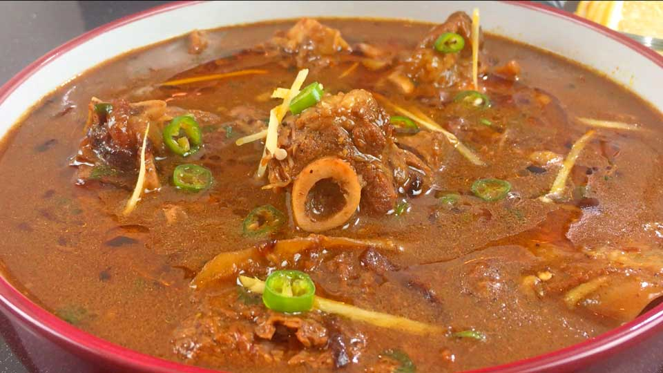

Mutton Nihari

The National Dish of Pakistan!
This nihari meat recipe is a traditional Pakistani dish that took over taste buds of people all across India and Pakistan.
Nihari is considered to be the national dish of Pakistan and with this nihari recipe, you will be able to cook royal food in the comforts of your own home. Serve alongside some fresh homemade naan for a delicious dinner.
Ingredients Required
Marinade
- 1 lamb
- 1 onion
- 100 ml oil
- 1 tsp ginger paste
- 1 tsp garlic paste
- 1 tsp chilli powder
- 1 tsp turmeric powder
- 1 tsp salt
- 50 g wheat flour
- 100 ml water
- Coriander
- Ginger
- 2 green chillies
Nihari Spices
- 1 tbspfennel seeds
- 1 tbsp cumin seeds
- 1 tbsp coriander seeds
- 1 tbsp peppercorn
- 1 inch cinnamon stick
- 2 black cardamoms
- 5 green cardamoms
- 7 cloves
- 2 bay leaves
Steps
- In a pan heat up the oil on medium heat until hot.
- Add the ginger paste and garlic paste then sauté for a few minutes on medium heat.
- Add the lamb or mutton and cook until the colour changes.
- While the lamb/mutton is cooking, grind the fennel seeds, cumin seeds, coriander seeds, black peppercorns, cinnamon, black cardamom pods, green cardamom pods, cloves and bay leaves until a fine powder is formed.
- Add the nihari masala powder, chilli powder, turmeric powder, and salt then cook the spices for 5 minutes.
- Add the water and cook for a further 2 hours on low heat until the meat is tender
- In a separate bowl, mix the wheat flour and 100ml of water to form a smooth paste – this flour mixture acts as a thickening agent, if you want to thicken it more then add more flour.
- Add the flour mixture into the pan then cover with a lid and cook for 30 minutes on a low heat.
- In another pan, heat up the olive oil on medium heat until hot.
- Add the sliced onions and fry the sliced onions until browned and caramelised.
- Add the browned onions to the lamb along with the chopped coriander, julienned ginger, and finely diced chillies.
- Serve with homemade or store-bought naan and enjoy!
Back To Home